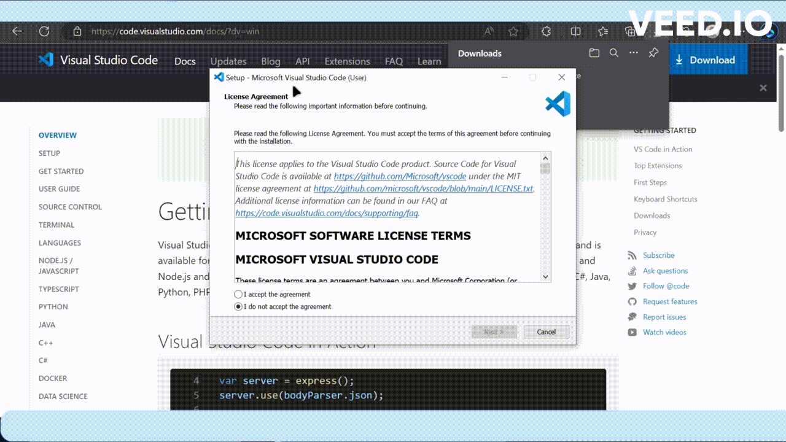

Installer VS Code (Microsoft)
Visual Studio Code est un éditeur de code léger, extensible et très populaire. Il est largement utilisé par les développeurs pour divers langages de programmation et fournit de nombreuses fonctionnalités pour améliorer notre productivité.
Objectif 6 : Installer Visual Studio Code
Installation et configuration
Pour installer Visual Studio Code (VS Code), suivons ces étapes :
- Accédons au site officiel de Visual Studio Code.

- Téléchargeons la version appropriée de VS Code pour notre système d'exploitation. Il est disponible pour
Windows, macOS etLinux.

Note
Assurons-nous de choisir la version qui correspond à notre système.
Une fois le téléchargement terminé, ouvrons le fichier d'installation.
Suivons les instructions d'installation spécifiques à notre système d'exploitation pour terminer le processus d'installation. Sur la plupart des systèmes, il s'agit d'un processus simple de type suivant, accepter les termes et installer.

- Une fois l'installation terminée, lançons
Visual Studio Code.

Note
Nous pouvons maintenant personnaliser VS Code selon nos besoins en installant des extensions, en configurant des paramètres et en créant des projets pour commencer à travailler.
Ajouter Extension SSH
Pour ajouter une extension SSH à Visual Studio Code, suivons ces étapes :
- Lançons Visual Studio Code si ce n'est pas déjà fait. Dans la barre latérale gauche, recherchons et cliquons sur l'icône de l'onglet Extensions (représenté par des carrés empilés).

- Dans le champ de recherche en haut, tapez SSH et appuyons sur "Entrée". Cela affichera les extensions liées à SSH. Parcourons la liste des extensions SSH disponibles. Nous pouvons trouver des extensions telles que Remote - SSH qui nous permettent de nous connecter à des hôtes distants via SSH.

- Cliquez sur l'extension "Remote - SSH", pour accéder à sa page d'extension. Cliquons sur le bouton Installer à côté de l'extension. Visual Studio Code commencera à télécharger et installer l'extension.

Une fois l'extension installée, elle sera activée automatiquement.
- Nous pouvons maintenant utiliser l'extension SSH pour vous
connecter à des hôtes distantsdepuis Visual Studio Code. Pour ce faire, Nous pouvons sur l'icône de l'extension dans la barre latérale, puis suivons les instructions pour configurer et établir des connexions SSH.

- Entrons notre mot de passe et connectons-nous :

Connexion à EVEng via SSH
Après l'installation d'EVEng, le service SSH est directement disponible pour établir des connexions. Nous pouvons nous connecter à EVEng via SSH.

L'extension SSH nous permettra de travailler de manière transparente avec des systèmes distants et de gérer des projets à distance depuis Visual Studio Code.

Ressources supplémentaires
- Pour plus de détails, nous pouvons consulter les liens suivants: Visual Studio Code in Action
Mots Techniques
#VS Code #éditeur #NetDevOps #Programmation #Extension #SSH